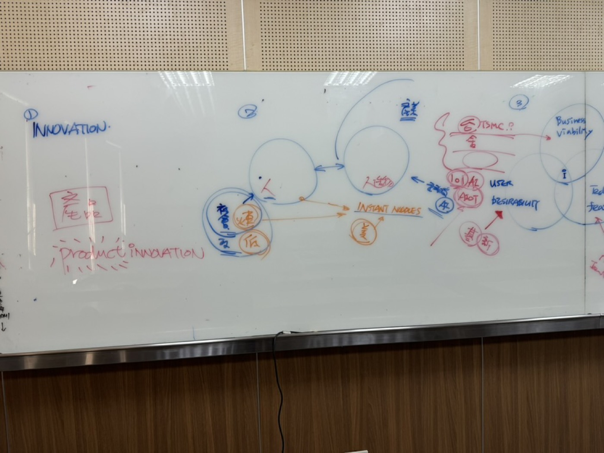
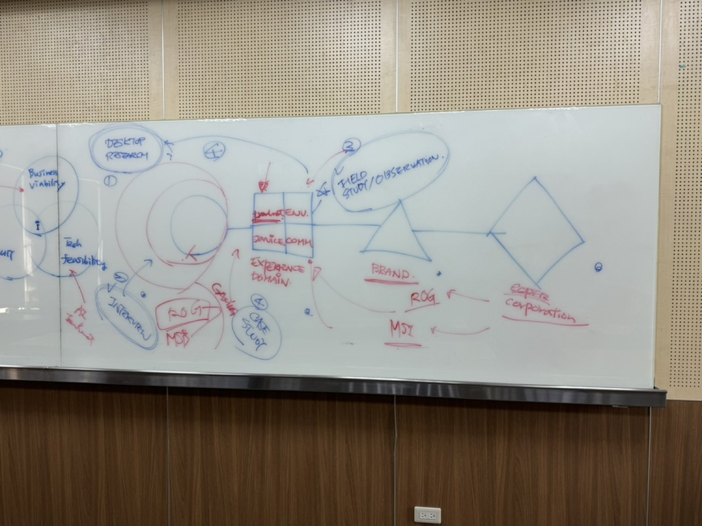
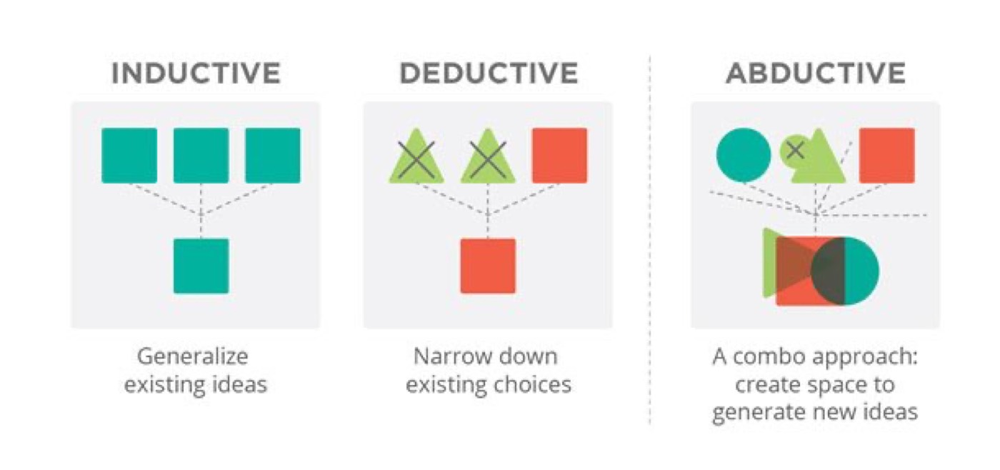

章節標題通常對應摘要的結構：先看摘要說要做什麼，再看標題怎麼安排，就能掌握全文架構。
讀摘要時，逐句判斷每一句在說什麼：
看摘要要抓三件事：目標、問題、方法。
原始資料 Raw data
引言、引用的文獻與設計師的說法。
資訊 Information
整理後的段落，例如第一段談設計的本質、第二段談設計的複雜性。
知識 Knowledge
可以拿來下結論的資訊。
演繹 Deductive
從規則推到個案。
人都會死；蘇格拉底是人 → 蘇格拉底會死。
歸納 Inductive
從許多個案歸納出規則。
觀察到的每一個人最後都死了 → 人都會死。
溯因 Abductive
從看到的結果，推測最可能的解釋或做法。
設計師面對「想要的結果」，提出可能達成它的方案，再回頭檢驗。這是設計思考最常用的推理。

假設思維（hypothesis-driven）
先依對問題的理解提出假設，再用資料驗證；假設錯了就調整，不必把原本的計畫做完。
例：一個品牌假設主要客群是年輕上班族，原本規劃 10 場焦點團體。做完前 2 場就發現假設不成立，於是停下來重新定義客群，省下後面 8 場的成本。
IDEO 腦力激盪的 7 個規則
腦力激盪幫你打開可能性；假設思維幫你快速收斂。研究時兩者都會用到。